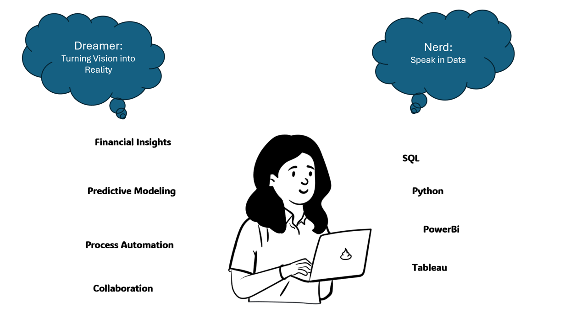

Financial Forecast Accuracy Improvement
Presenter Name: Linnie Sun | Role: Senior Financial Analyst

Agenda
- Project Introduction
- Project Planning and Execution
- Decision-Making and Trade-offs
- Technical Implementation
- Quality Assurance
- Project Outcome and Impact
Project Introduction
Purpose of the Project
Enhance financial forecast accuracy and streamline reporting for data-driven decision-making.
Problem Statement
Lack of automation and manual processes were leading to inefficiencies and inaccuracies in forecasts.
Pre-Project State
Prior to the project, business operations relied on manual reporting, resulting in time-consuming processes and forecast inaccuracies.
Need for Change
The management team required faster, data-driven insights to improve decision-making.
Project Planning and Execution
Project Goals
- Increase forecast accuracy
- Reduce manual errors and save time through automation
Key Performance Indicators (KPIs)
- Forecast accuracy percentage
- Time saved in reporting
- Reduction in manual errors
Stakeholders Involved
Finance team, executive leadership, operations team, pricing team
Communication Strategy
Regular updates through dashboards and weekly reports to align stakeholders and demonstrate progress.
Decision-Making and Trade-offs
Trade-offs Made
Balancing model complexity with operational needs for interpretability.
Discarded Solutions
Purely manual approaches and certain high-complexity models that were resource-intensive.
Challenges
Limited data quality, resistance to change, and initial stakeholder buy-in.
Technical Implementation
Tools and Methodology
Excel / SQL for data extraction, Python (Pandas and NumPy) for data preparation, and Python for model building.
Algorithms & Methodology
- ETS for capturing seasonality
- XGBoost for trend prediction with lagged variables
Quality Assurance
- Back-Testing: Testing the model on historical data to assess past performance.
- Iterative Accuracy Checks: Fine-tuning the model through multiple adjustments for accuracy.
- Mean Absolute Percentage Error (MAPE): Average deviation of model predictions.
Project Outcome and Impact
Results
- Improved forecast accuracy significantly
- Time saved through automated reporting
- Promotion to Senior Financial Analyst as a result of project success
Business Impact
Enhanced cash flow prediction, operational cost control, and strategic decision-making.